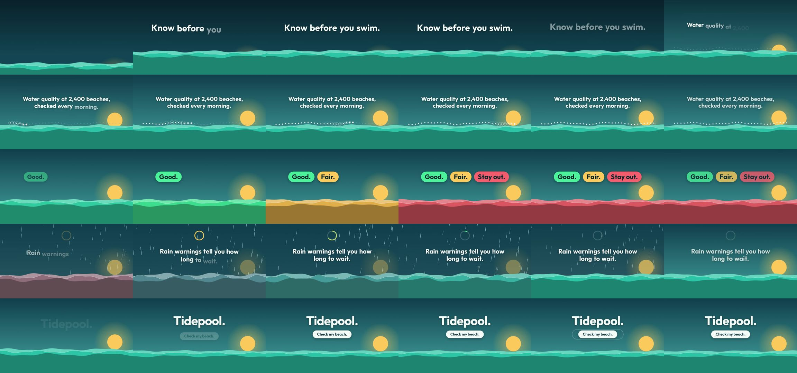

hypit-ai/hypit: test run, 2026-10-11
The same brief for every skill: a 15-second promo for a made-up app, five fixed lines of on-screen copy, 1920 x 1080 at 30 frames per second. Claude Code (Claude Opus 5.5) made it with the skill in a throwaway sandbox with no API keys for video, image or voice models. 6.5 minutes; sound: yes. All results · The brief · How it is checked
Drew everything in code on this machine; no paid model or account was needed for this brief.
The four checks
| Renders to a playable file | pass | H.264 |
|---|---|---|
| Length, size and frame rate as asked | pass | 15.0 s, 1920x1080, 30.0 fps |
| All five lines readable | pass | 5 of 5 |
| The picture moves | pass | 0% of sampled frame pairs held still |
Frames sampled twice a second

How it was made (the session's closing message)
The 15-second Tidepool promo is rendered with the Hypit skill. I checked the encoded file against the brief: H.264, 1920×1080, 30 fps, 450 frames, exactly 15.0 s. **How I made it.** No paid models or API keys were needed. Everything was drawn in code and rendered on this machine with Chromium and ffmpeg. The global npm install was blocked by permissions, so Hypit 0.3.1 is installed inside `~/work/project` instead. **What it looks like.** A dawn sea sits along the bottom of the frame for the whole video, and its colour and movement carry each line of copy. The copy is set large in the Outfit typeface and appears exactly as written, in order: - **0–2.4 s:** the sea rises into frame and "Know before you swim." comes up word by word. - **2.4–6 s:** the sun rises while a row of dots (the beaches) lights up one by one along the far wave, under "Water quality at 2,400 beaches, checked every morning." - **6–9 s:** "Good.", "Fair." and "Stay out." land as green, amber and red pills. The sea turns each colour as its word arrives. - **9–12 s:** rain falls and a ring drains like a timer while the sea clears back to aqua, under "Rain warnings tell you how long to wait." - **12–15 s:** "Tidepool." as a large wordmark, with "Check my beach." in a button that gives a soft press. Every line has at least about a second fully on screen after it finishes arriving, with a short pause between lines. There's no voice-over, no logos and no text beyond the copy. **Sound.** I left the video silent, which the brief allows. The file still contains an audio track, but it's pure silence (−91 dB). **Editable project.** `~/work/project` holds everything the video was rendered from: - **Text and timing:** `productions/promo/authors/promo.svml` holds the copy and when each line starts. - **Look and motion:** the drawing code is in `packages/tidepool-promo/`. - **Notes:** the run file and short notes (brief, treatment, progress) sit alongside, including the commands to rebuild. DELIVERABLE: ~/work/output/video.mp4